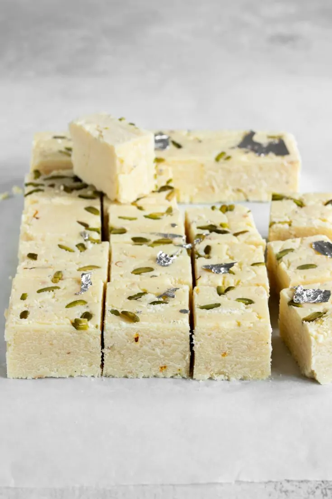

Barfi and Rabdi

Description
A classical Indian milk-based fudge or dessert recipe made with evaporated milk solids and milk powder.
It is a perfect dessert sweet snack for the festival season and can be easily shared with friends and family.
Ingredients
- 5 cup milk powder, full cream
- 1.5 cup sugar
- 2 cup milk
- 0.5 cup ghee / clarified butter
- 6 tbsp pistachios, chopped
Steps
- firstly, in a bowl take 2½ cup milk powder, ¾ cup sugar and 1 cup milk.
- whisk and mix well until everything is well combined.
- transfer the mixture into large kadai. recommend using nonstick pan to prevent from sticking
- also add ¼ cup ghee and mix well on low flame.
- keep stirring on low flame until the mixture thickens.
- the mixture will hold the shape and starts to separate the pan after 10 minutes.
- do not overcook, as the burfi will turn hard. and if the mixture is undercooked then it turns chewy.
- transfer the burfi dough into the tray lined with baking paper.
- press gently, making sure its leveled up.
- top with few chopped pistachios and press gently.
- cover and refrigerate for 1 hour or until it sets completely.
- after 1 hour, unmould the burfi and cut with sharp knife. and eat